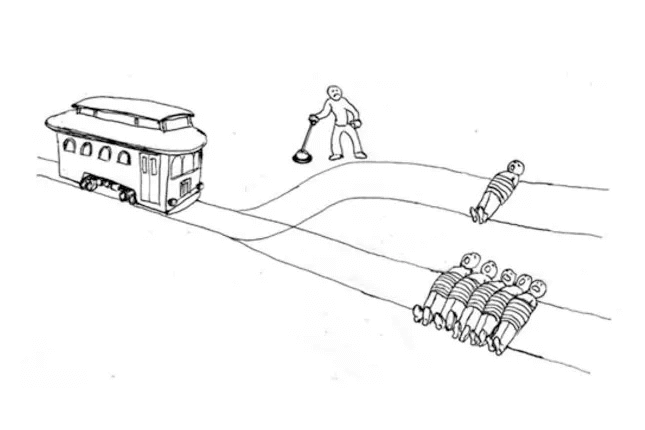

The Trolley Problem
The Trolley Problem is a thought experiment in ethics that presents a moral dilemma involving a runaway trolley and the decision to divert it to one of two tracks, each with different consequences.
Option 1: Steer into One Person – Divert the trolley onto the second track, where it will kill one person.
Option 2: Do nothing – Allow the trolley to continue on its current path, which will result in the death of the five people on the track.